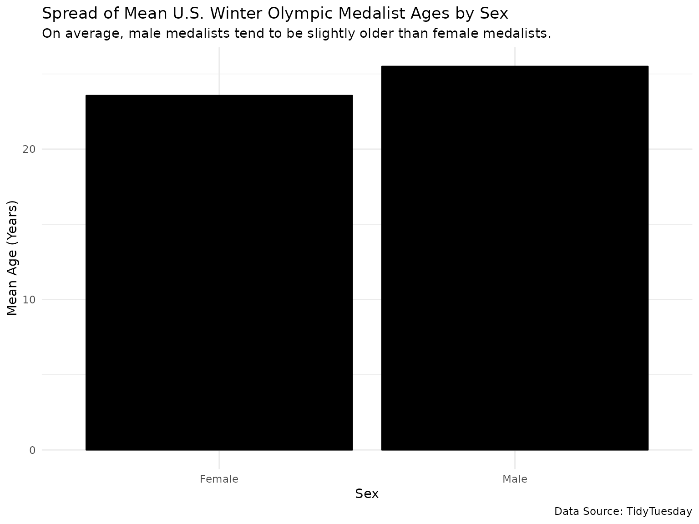
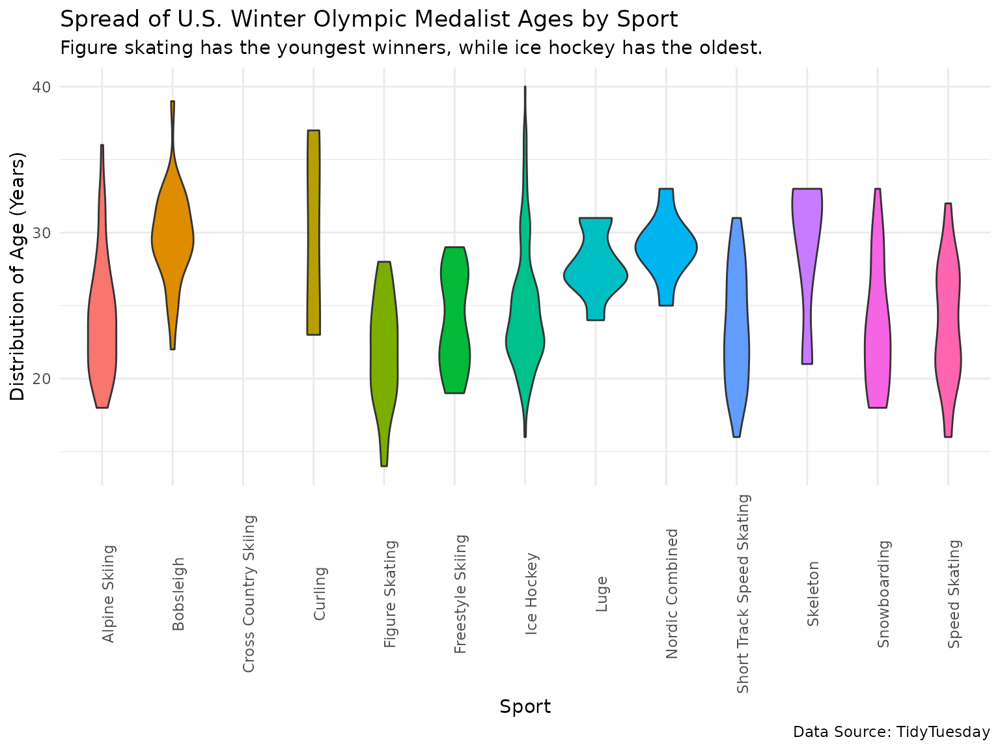
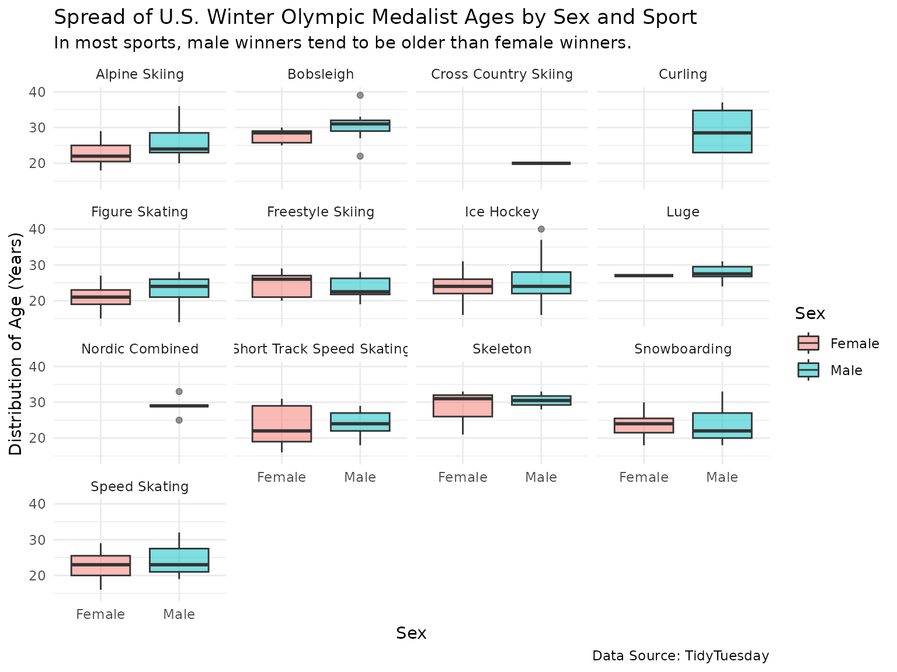

How to Load the beepr Package
After installation, you can load the beepr package with
the following command:
Example Analysis
To demonstrate how to use the functions in the beepr
package, we will conduct an example analysis.
Original Data
The original data in this analysis is the olympics
dataset from TidyTuesday.
Description
According to the
olympics dataset’s documentation, the data contains
information about athletic participants and medal wins in the modern
Olympic Games (from Athens 1896 to Rio 2016).
Data Dictionary
The documentation for the olympics dataset provides a
helpful data dictionary.
Analysis
Loading the Data into R
First, we need to load all necessary packages and the
olympics dataset.
# Load the `here`, `tidytuesdayR`, and `tidyverse` packages
library(here)
library(tidytuesdayR)
library(tidyverse)
# Play a random sound once all of the packages have been loaded
beepr::beep(0)
# Test if a "data" directory exists locally; if not, create it
if(!dir.exists(here("data"))) { dir.create(here("data")) }
# Save the data only once (not each time the R Markdown document is knit)
if(!file.exists(here("data","olympics.rda"))) {
url_csv <- 'https://raw.githubusercontent.com/rfordatascience/tidytuesday/master/data/2021/2021-07-27/olympics.csv'
olympics <- read_csv(url_csv)
# Save the olympics file to an rda object
save(olympics, file = here("data","olympics.rda"), version = 2)
}Data Wrangling
To wrangle the olympics dataset, we will primarily use
the tidyverse packages.
# Wrangling the Olympics data
wrangled_olympics <- olympics %>%
# Remove NA values from all columns (only leaves medal winners)
tidyr::drop_na() %>%
# Filter to only include observations from US athletes, Winter games
dplyr::filter(noc == "USA",
season == "Winter") %>%
# Replace "M" with "Male", "F" with "Female",
dplyr::mutate(
sex = dplyr::if_else(sex == "M",
"Male", "Female")
) %>%
# Select only the variables relevant for this analysis
dplyr::select(sex, sport, age)
# Play a sound if glimpsing the new, wrangled dataset produces an error
beepr::beep_on_error(dplyr::glimpse(wrangled_olympics))
#> Rows: 508
#> Columns: 3
#> $ sex <chr> "Male", "Male", "Male", "Male", "Male", "Male", "Male", "Female"…
#> $ sport <chr> "Figure Skating", "Ice Hockey", "Figure Skating", "Ice Hockey", …
#> $ age <dbl> 28, 23, 24, 23, 14, 24, 31, 23, 23, 22, 28, 20, 21, 25, 21, 29, …Before visualizing the data, we will explore it in a few different ways.
# Find the class of each column of the new, wrangled dataset
wrangled_olympics %>%
purrr::map_chr(class)
#> sex sport age
#> "character" "character" "numeric"As expected sex and sport are character
vectors, while age is a numeric vector. How many distinct
observations are there in each vector?
# Find the number of distinct obs. in each column of the new, wrangled dataset
wrangled_olympics %>%
purrr::map_dbl(n_distinct)
#> sex sport age
#> 2 13 26It’s interesting to note here that there are 13 different Winter Olympic sports represented in our dataset, which implies that there have been 13 different Winter Olympic sports that U.S. athletes have won a medal in.
Data Visualization
To visualize the olympics dataset, we will use the
ggplot2 package.
To start, let’s look at how the average ages compare for male and female U.S. medalists at the Winter Olympic games.
ggplot(data = wrangled_olympics, mapping = aes(x = sex, y = age)) +
geom_bar(stat = "summary", fun.y = "mean", color = "black", fill = "black") +
scale_y_continuous(label = scales::comma) +
labs(title = "Spread of Mean U.S. Winter Olympic Medalist Ages by Sex",
subtitle = "On average, male medalists tend to be slightly older than female medalists.",
caption = "Data Source: TidyTuesday",
x = "Sex",
y = "Mean Age (Years)") +
theme_minimal()
Although the means of male and female medalists’ ages are similar, male medalists appear to be slightly older than female medalists.
To further answer our question, let’s look at how U.S. medalists’ ages compare by different winter sports.
ggplot(data = wrangled_olympics, mapping = aes(sport, age, fill = sport)) +
geom_violin() +
scale_y_continuous(label = scales::comma) +
labs(title = "Spread of U.S. Winter Olympic Medalist Ages by Sport",
subtitle = "Figure skating has the youngest winners, while ice hockey has the oldest.",
caption = "Data Source: TidyTuesday",
x = "Sport",
y = "Distribution of Age (Years)") +
theme_minimal() +
theme(axis.text.x = element_text(angle = 90),
legend.position = "none")
Regardless of sex, figure skating has the youngest winners, while ice hockey has the oldest among U.S. Winter Olympic medalists.
Now, let’s look at both winter sports and U.S. medalist sexes. How are U.S. Winter Olympic medalists’ ages spread by these two variables?
ggplot(data = wrangled_olympics, mapping = aes(sex, age, fill = sex)) +
geom_boxplot(alpha = 0.5) +
scale_y_continuous(label = scales::comma) +
labs(title = "Spread of U.S. Winter Olympic Medalist Ages by Sex and Sport",
subtitle = "In most sports, male winners tend to be older than female winners.",
caption = "Data Source: TidyTuesday",
x = "Sex",
y = "Distribution of Age (Years)",
fill = "Sex") +
theme_minimal() +
facet_wrap(vars(sport))
In most Winter Olympic sports, male U.S. medalists tend to be older than female U.S. medalists. It’s also interesting to note that some sports have not yet had any female medalists from the U.S. (e.g., Cross Country Skiing).
Summary of Results
In the majority of Winter Olympic sports, both the means and overall distributions of U.S. male medalists’ ages are greater than those of U.S. female medalists’ ages. Regardless of sex, figure skating as a winter sport has the youngest winners, while ice hockey has the oldest among all Winter Olympic U.S. medalists.